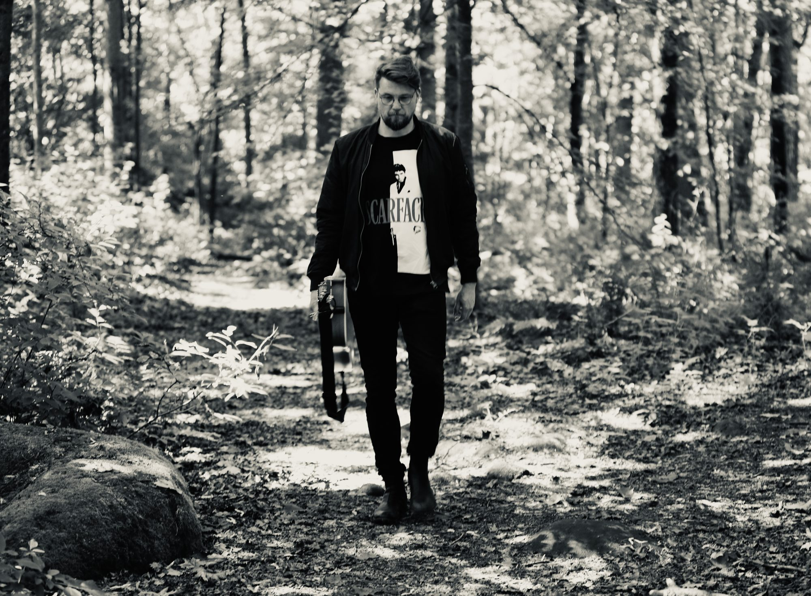
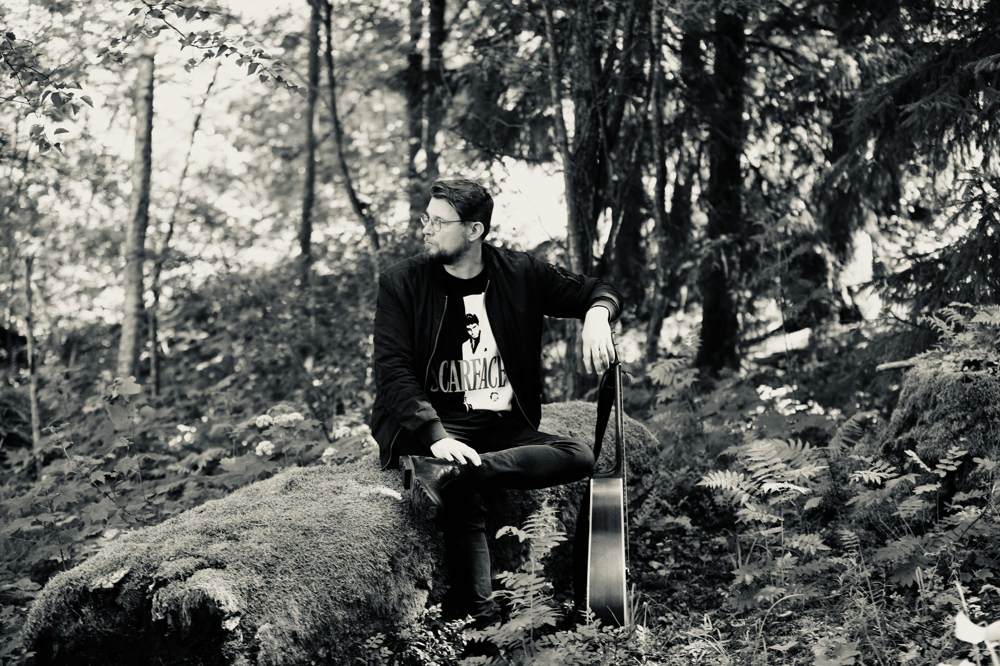

Kuuntele mua vielä
Ennen kun sä solmit kengät
Kukaan ei koskaan tuu sua rakastamaan näin
Single · {{ j.pvm }}
{{ j.nimi }}
Mitä sä olisit halunnut sanoa, ennen kuin toinen solmi kengät?
Laulu ilmestyy kaikkiin suoratoistopalveluihin {{ j.pvm }}. Tallenna se ennakkoon, niin se odottaa sua kirjastossasi julkaisupäivänä.
Etkö käytä Spotifyta? Kuuntele omassa palvelussasi
{% else %} {% endif %}Mistä laulu syntyi
Tästä biisistä kaikki alkoi.
Olin jo vuosia yrittänyt ymmärtää, millaista musiikkia Meretniemi olisi. Poppia? Kahvilajatsia? R’n’B:tä? Iskelmää? Akustista luomusoundia? Supertuotettua elektronista? Oli kymmenittäin ideoita mutta ei punaista lankaa.
Kaiken lisäksi en oikein vieläkään kestänyt kuunnella omaa lauluääntäni, edes studio-olosuhteissa.
Sitten koitti kevät 2022. Olimme sopineet tuottaja Jukka Jahnukaisen kanssa ekan yhteisen session. Tiesin Jukan, koska olimme housewritereita samassa kustantamossa, ja ihailin hänen kirjoittajantaitojaan.
Tuossa sessiossa oli tarkoitus kirjoittaa biisi kotimaiselle miesartistille (olisko ollut Ressulle). Biisin valmistuttua vedin demolaulut Jukan tuottaman träkin päälle. Kun kuuntelimme kokonaisuutta, mulle tuli outo olo. Sähköistynyt olo. Tajusin että tässä se oli. Tämä musa oli Meretniemeä.
Sanoin Jukalle että haluan biisin itselleni. Jukka sanoi tottakai.
(Myöhemmin Jukka kertoi että vähän v*tutti, koska hän piti biisiä hyvänä eikä voinut tarjota sitä isommille artisteille. Sori Jukka!)
Siinä hetkessä tapahtui monta asiaa samanaikaisesti. Rakastuin biisin melankoliaan. Rakastuin Jukan sorvaamaan laulusoundiin, jossa oli läsnäoloa ja intiimiyttä. Rakastuin tuotannon elokuvalliseen tunnelmaan. Olin huojentunut. Vuosien etsintä oli päättynyt. Meretniemi oli syntynyt.

Mistä laulu kertoo
Ei kukaan niin kuin mä kertoo eron hetkestä, kun toinen on juuri lähtemässä. Aihe löytyi meidän molempien omasta elämästä. Jukka oli kumppaninsa kanssa juuri päätynyt asumuseroon. Vaikka mun omasta avioerostani oli vuosia aikaa, en ollut purkanut jätetyksi tulemisen kokemusta kovin moneen kappaleeseen. En nytkään tietoisesti tehnyt niin. Vasta kun biisi oli valmis, huomasin että siihen oli tallentunut paljon sitä, minkä kanssa painin oman eroni aikaan.
Biisin kertoja on jätetty osapuoli. Häntä sattuu, koska toinen ei ymmärrä, mitä kertoja on tämän puolesta tehnyt. Hänen rakkauttaan ja panostaan suhteen hyväksi ei selvästikään ole arvostettu. Silti hän haluaisi jatkaa suhdetta.
Näkökulmassa on tiettyä harhaisuutta, mitä kertoja ei itse huomaa: jos kerran oma rakkaus on ollut niin erityistä, ettei kumppani voisi koskaan löytää mitään vastaavaa, miksi kumppanilla on tarve lähteä? Mutta biisissä ei vielä olla oivalluksissa. Ensin pitää tuntea hylätyksi tulemisen tuska koko sen voimassa.

Sanat
Sä kysyt mis mun Kissin paita
En mä haluis vastata
Et edes pysty kattoo silmiin
Kun vedät repun vetskarin kii
Täst kaikest vois viel sopii
Ton jalkalistan korjata
Mut siin sä purat meidän kotii
Kuuntele mua vielä
Ennen kun sä solmit kengät
Kukaan ei koskaan tuu sua rakastamaan näin
Niin kauan kun oot siinä
Sun ei oo pakko mennä
Kukaan ei koskaan tuu sua rakastamaan näin
Uuuuuuuuuuu
Mua sattuu
Jos sä silti lähdet
Mä haluun et sä muistat
Ei kukaan niin kuin mä
Mitä jos tää ois uus alku
Myrsky joka puhdistaa
Ja vaik vähän sukat kastu
Me voitas yhes viel jatkaa
Kuuntele mua vielä
Ennen kun sä solmit kengät
Kukaan ei koskaan tuu sua rakastamaan näin
Niin kauan kun oot siinä
Sun ei oo pakko mennä
Kukaan ei koskaan tuu sua rakastamaan näin
Uuuuuuuuuuu
Mua sattuu
Jos sä silti lähdet
Mä haluun et sä muistat
Ei kukaan niin kuin mä
Sävellys ja sanat {{ j.savellys_sanat }}
Tuotanto ja miksaus {{ j.tuotanto }}
Masterointi {{ j.masterointi }}
Julkaisija {{ j.julkaisija }}
Tuliko joku mieleen?
Ehkä joku sun ystävä elää juuri nyt tätä hetkeä.